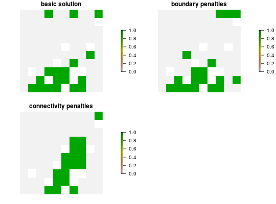

A penalty can be applied to a conservation planning problem to
penalize solutions according to a specific metric. Penalties---unlike
constraints---act as an explicit trade-off with the objective
being minimized or maximized (e.g. total solution cost given
add_min_set_objective).
Both penalties and constraints can be used as mechanisms to increase
solution connectivity, but instead of penalizing solutions with low
connectivity, a constraint acts as a cutoff to make certain solutions
invalid. Applying a constraint does not necessarily affect solution cost,
while applying a penalty does. Below are the penalties that can be added to
a ConservationProblem object.
add_boundary_penaltiesAdd penalties to a conservation problem to favor solutions that clump
selected planning units together into contiguous reserves. Uses shared
boundary length as a measure of connectivity, equivalent to the
boundary length modifier (BLM) in Marxan.
Boundary data is calculated automatically unless the planning units in
x are stored in a data.frame, in which case boundary data
must be added as a matrix or data.frame. This function
can only be used for symmetric relationships between planning units;
for asymmetric relationships use add_connectivity_penalties.
add_connectivity_penaltiesAdd constraints to a conservation problem to favor solutions that
select planning units with high connectivity between them. Uses
connectivity data in the form of a matrix or data.frame
object, where strength of connectivity is a value such as the inverse
distance between consecutive planning units. This function can be used
for symmetric or asymmetric relationships between planning units.
constraints, decisions,
objectives portfolios, problem,
solvers, targets.
## load data data(sim_pu_points, sim_features) ## create basic problem p1 <- problem(sim_pu_raster, sim_features) %>% add_min_set_objective() %>% add_relative_targets(0.2) %>% add_default_solver() ## create problem with boundary penalties p2 <- p1 %>% add_boundary_penalties(5, 1) ## create problem with connectivity penalties # create connectivity matrix based on spatial proximity sc_matrix <- as.data.frame(sim_pu_raster, xy = TRUE) sc_matrix <- sc_matrix[is.finite(values(sim_pu_raster)), 1:2] sc_matrix <- 1 / (as.matrix(dist(sc_matrix)) + 1) # remove connections between planning units with little connectivity sc_matrix[sc_matrix < 0.85] <- 0 # create problem p3 <- p1 %>% add_connectivity_penalties(25, sc_matrix) ## solve problems s <- stack(solve(p1), solve(p2), solve(p3))#> Optimize a model with 5 rows, 90 columns and 450 nonzeros #> Variable types: 0 continuous, 90 integer (90 binary) #> Coefficient statistics: #> Matrix range [2e-01, 9e-01] #> Objective range [2e+02, 2e+02] #> Bounds range [1e+00, 1e+00] #> RHS range [6e+00, 1e+01] #> Found heuristic solution: objective 4135.2744673 #> Presolve time: 0.00s #> Presolved: 5 rows, 90 columns, 450 nonzeros #> Variable types: 0 continuous, 90 integer (90 binary) #> Presolved: 5 rows, 90 columns, 450 nonzeros #> #> #> Root relaxation: objective 3.490348e+03, 17 iterations, 0.00 seconds #> #> Nodes | Current Node | Objective Bounds | Work #> Expl Unexpl | Obj Depth IntInf | Incumbent BestBd Gap | It/Node Time #> #> 0 0 3490.34813 0 4 4135.27447 3490.34813 15.6% - 0s #> H 0 0 3597.0951275 3490.34813 2.97% - 0s #> #> Explored 1 nodes (17 simplex iterations) in 0.00 seconds #> Thread count was 1 (of 4 available processors) #> #> Solution count 2: 3597.1 4135.27 #> #> Optimal solution found (tolerance 1.00e-01) #> Best objective 3.597095127479e+03, best bound 3.490348127696e+03, gap 2.9676% #> Optimize a model with 293 rows, 234 columns and 1026 nonzeros #> Variable types: 0 continuous, 234 integer (234 binary) #> Coefficient statistics: #> Matrix range [2e-01, 1e+00] #> Objective range [1e+00, 2e+02] #> Bounds range [1e+00, 1e+00] #> RHS range [6e+00, 1e+01] #> Found heuristic solution: objective 18523.196992 #> Found heuristic solution: objective 4152.2744673 #> Presolve time: 0.00s #> Presolved: 293 rows, 234 columns, 1026 nonzeros #> Variable types: 0 continuous, 234 integer (234 binary) #> Presolved: 293 rows, 234 columns, 1026 nonzeros #> #> #> Root relaxation: objective 3.511770e+03, 47 iterations, 0.00 seconds #> #> Nodes | Current Node | Objective Bounds | Work #> Expl Unexpl | Obj Depth IntInf | Incumbent BestBd Gap | It/Node Time #> #> 0 0 3511.77011 0 10 4152.27447 3511.77011 15.4% - 0s #> H 0 0 3611.0142184 3511.77011 2.75% - 0s #> #> Explored 1 nodes (47 simplex iterations) in 0.00 seconds #> Thread count was 1 (of 4 available processors) #> #> Solution count 3: 3611.01 4152.27 18523.2 #> #> Optimal solution found (tolerance 1.00e-01) #> Best objective 3.611014218420e+03, best bound 3.511770107145e+03, gap 2.7484% #> Optimize a model with 549 rows, 362 columns and 1538 nonzeros #> Variable types: 0 continuous, 362 integer (362 binary) #> Coefficient statistics: #> Matrix range [2e-01, 1e+00] #> Objective range [4e+01, 4e+02] #> Bounds range [1e+00, 1e+00] #> RHS range [6e+00, 1e+01] #> Found heuristic solution: objective 20737.196992 #> Found heuristic solution: objective 5015.6632679 #> Presolve time: 0.00s #> Presolved: 549 rows, 362 columns, 1538 nonzeros #> Variable types: 0 continuous, 362 integer (362 binary) #> Presolved: 549 rows, 362 columns, 1538 nonzeros #> #> #> Root relaxation: objective 4.147439e+03, 130 iterations, 0.00 seconds #> #> Nodes | Current Node | Objective Bounds | Work #> Expl Unexpl | Obj Depth IntInf | Incumbent BestBd Gap | It/Node Time #> #> 0 0 4147.43940 0 362 5015.66327 4147.43940 17.3% - 0s #> 0 0 4182.81333 0 358 5015.66327 4182.81333 16.6% - 0s #> 0 0 4200.50939 0 357 5015.66327 4200.50939 16.3% - 0s #> 0 0 4200.76247 0 358 5015.66327 4200.76247 16.2% - 0s #> 0 0 4229.77114 0 354 5015.66327 4229.77114 15.7% - 0s #> H 0 0 4947.3994117 4229.77114 14.5% - 0s #> 0 0 4257.28525 0 352 4947.39941 4257.28525 13.9% - 0s #> H 0 0 4849.9226979 4257.28525 12.2% - 0s #> H 0 0 4776.5014945 4257.28525 10.9% - 0s #> H 0 0 4718.6197283 4257.28525 9.78% - 0s #> #> Cutting planes: #> Gomory: 4 #> #> Explored 1 nodes (399 simplex iterations) in 0.48 seconds #> Thread count was 1 (of 4 available processors) #> #> Solution count 6: 4718.62 4776.5 4849.92 ... 20737.2 #> #> Optimal solution found (tolerance 1.00e-01) #> Best objective 4.718619728279e+03, best bound 4.257285250999e+03, gap 9.7769%# plot solutions plot(s, axes = FALSE, box = FALSE, main = c("basic solution", "boundary penalties", "connectivity penalties"))